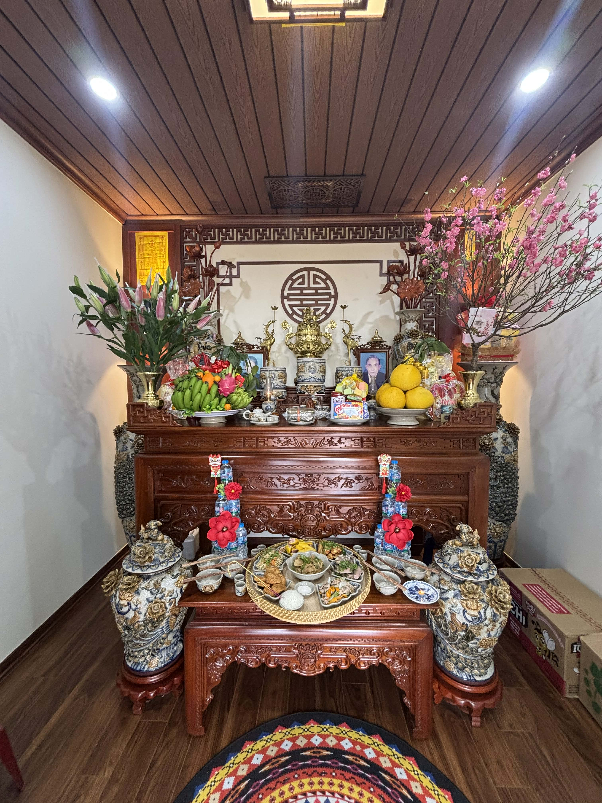
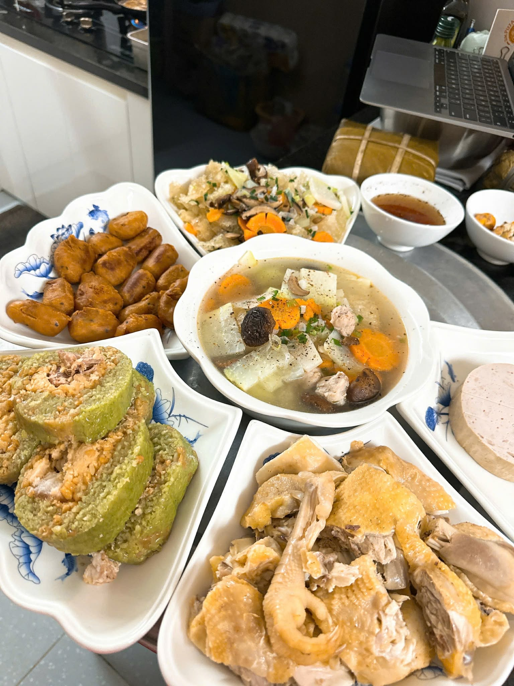
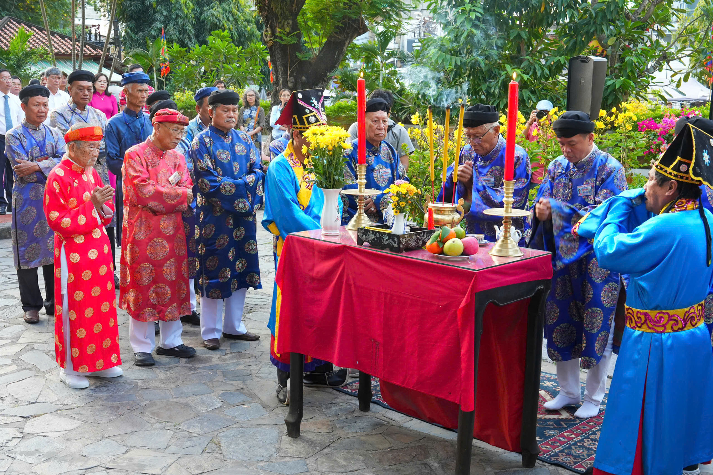
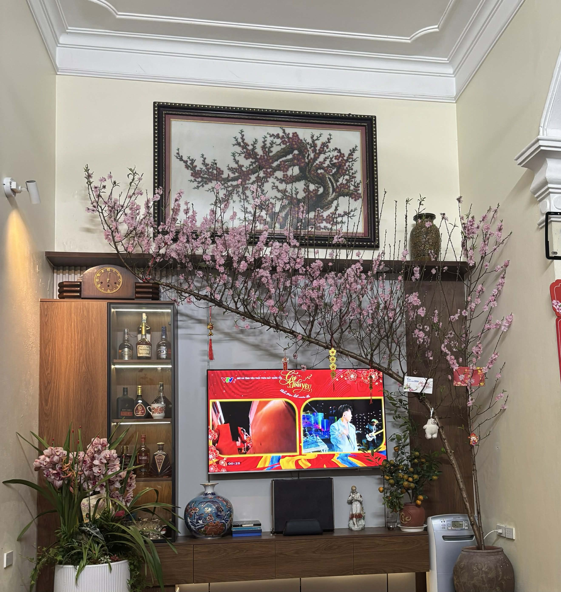
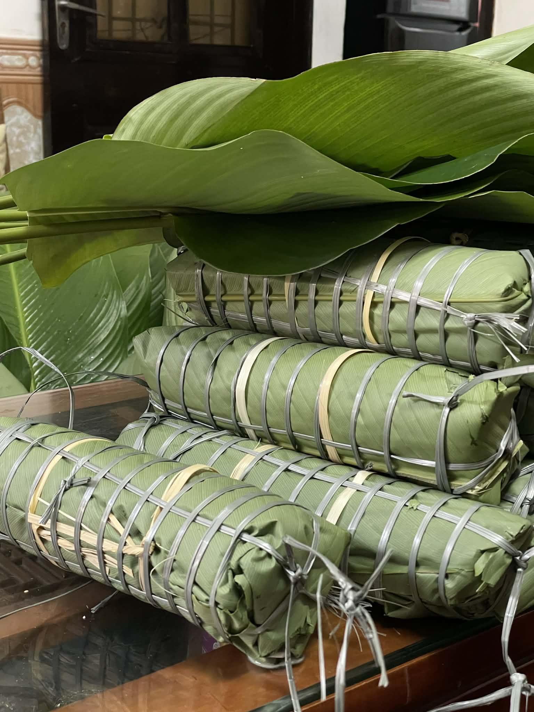
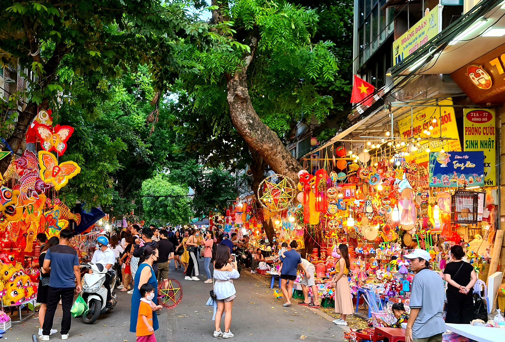
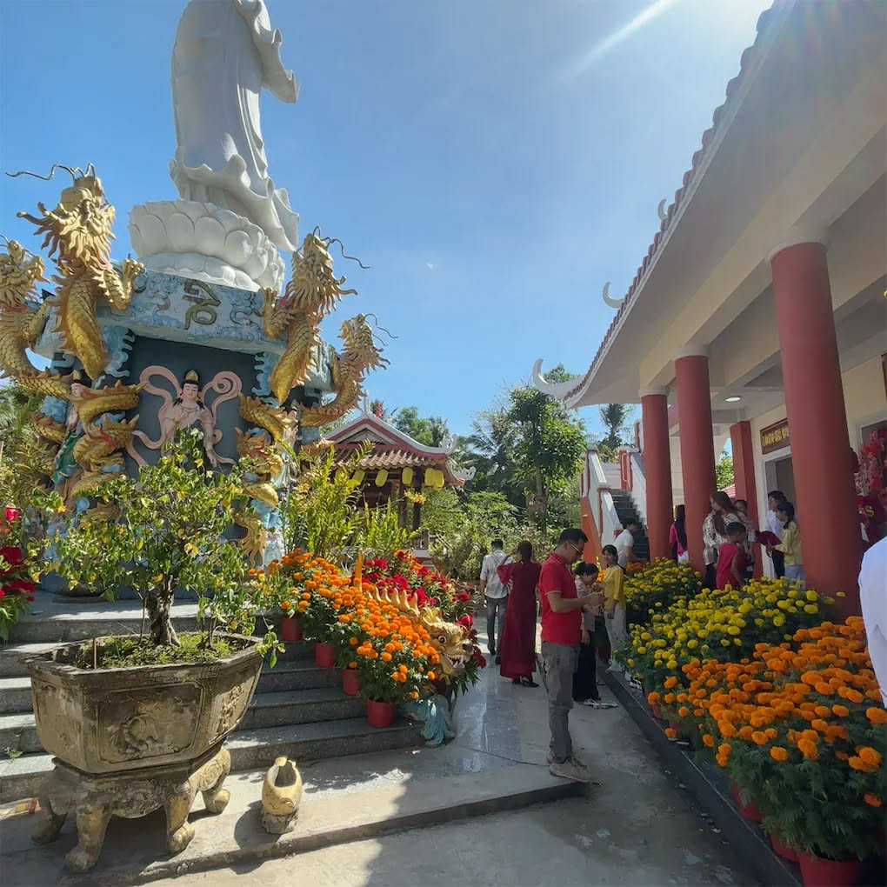
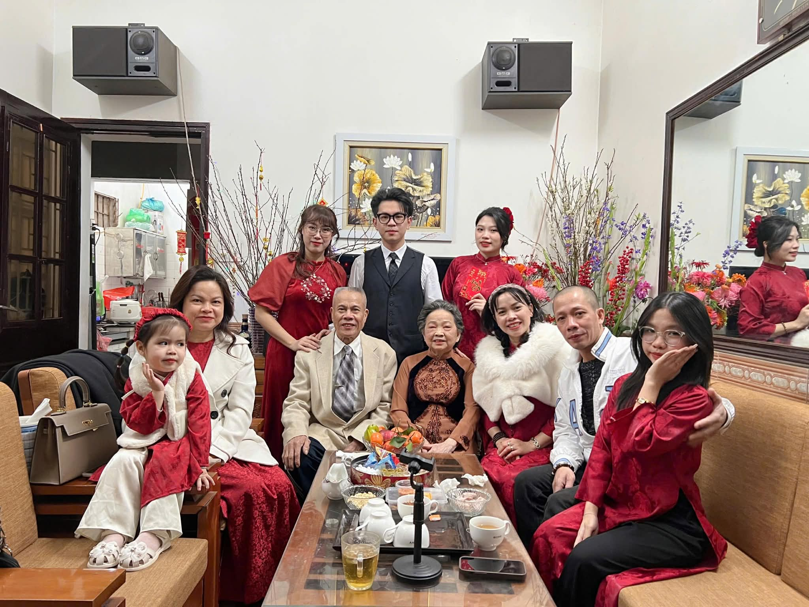

Tết ở Hà Nội - Đặc Biệt Như Thế Nào?
Hà Nội - Thủ đô nghìn năm văn hiến, nơi lưu giữ những nét văn hóa truyền thống đậm đà nhất của dân tộc. Tết cổ truyền ở Hà Nội không chỉ là dịp sum họp gia đình, mà còn là thời khắc để người dân Thăng Long thể hiện lòng tôn kính với tổ tiên, sự gắn bó với truyền thống và niềm tự hào về bản sắc văn hóa riêng.
Từ hương vị bánh chưng truyền thống, tiếng pháo đón giao thừa, không khí tấp nập của chợ hoa Quảng Bá, đến những lễ hội đầu năm tại Văn Miếu - Quốc Tử Giám, Hà Nội mang đến một mùa Xuân đậm chất Bắc Bộ, vừa trang trọng vừa ấm áp.
Website này được tạo ra nhằm giới thiệu, lưu giữ và lan toa những giá trị văn hóa tuyệt vời của Tết Hà Nội đến với mọi người, đặc biệt là thế hệ trẻ và những ai yêu mến Thủ đô.
Khám Phá Tết Hà Nội

Phong Tục Ngày Tết
Từ lễ cúng ông Công ông Táo, gói bánh chưng, đến cúng giao thừa và xin chữ đầu năm. Mỗi nghi lễ đều mang ý nghĩa sâu sắc, thể hiện đạo lý "uống nước nhớ nguồn" của người Việt.
Tìm hiểu thêm
Ẩm Thực Quê Hương
Bánh chưng xanh, giò chả, thịt đông, dưa hành... Những món ăn truyền thống không thể thiếu trên mâm cỗ Tết của người Hà Nội, mỗi món đều chứa đựng hương vị quê hương.
Khám phá món ngon
Văn Hóa - Lễ Hội
Lễ hội khai bút Văn Miếu, hội Lim, chợ hoa Quảng Bá, phố cổ Hà Nội rực rỡ đèn hoa. Không khí Tết Hà Nội vừa trang trọng vừa rộn ràng, vừa cổ kính vừa hiện đại.
Xem ngayHình Ảnh Tết Hà Nội





"Tết về, trời đất dường như đổi mới. Hà Nội thêm một lần khẳng định truyền thống nghìn năm văn hiến, nơi mà giá trị nhân văn, đạo lý truyền thống luôn được gìn giữ qua bao thế hệ."— Tục ngữ dân gian
Những Câu Nói Hay Về Tết
Về Gia Đình
"Tết đến, xuân về, là lúc con cháu sum họp bên mâm cơm gia đình. Dù ở đâu xa, lòng người Việt vẫn hướng về quê hương, về tổ tiên."
Về Truyền Thống
"Giữ gìn phong tục Tết là giữ gìn linh hồn dân tộc. Hà Nội - thủ đô nghìn năm, luôn tự hào là nơi lưu giữ những giá trị văn hóa quý báu nhất."
Về Quê Hương
"Hà Nội mùa xuân, hương hoa xuân rơi khắp phố phường. Tết về là về với ký ức tuổi thơ, về với hương vị bánh chưng, về với tình thân yêu thương."